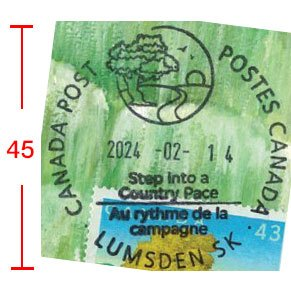

Lumsden PO pictorial cancel
Step Into a Country Pace – Au rythme de la campagne
- Status
- Active
- Run dates
- ? to present
- Design
- "Step Into a Country Pace / Au rythme de la campagne"; countryside landscape, trees, birds, sun
- Ink colour
- Black
- Designer
- Unknown
- Post office
- Lumsden PO
250 James St N
Lumsden, SK
S0G 3C0 - Subjects
- nature, tree, sun, bird, animal
Collect it by mail. Send your stamped covers, with a stamped return envelope, to the post office address above. How to collect pictorial cancels by mail · en français
 Central Butte POTown of Central Butte / 1914
Central Butte POTown of Central Butte / 1914